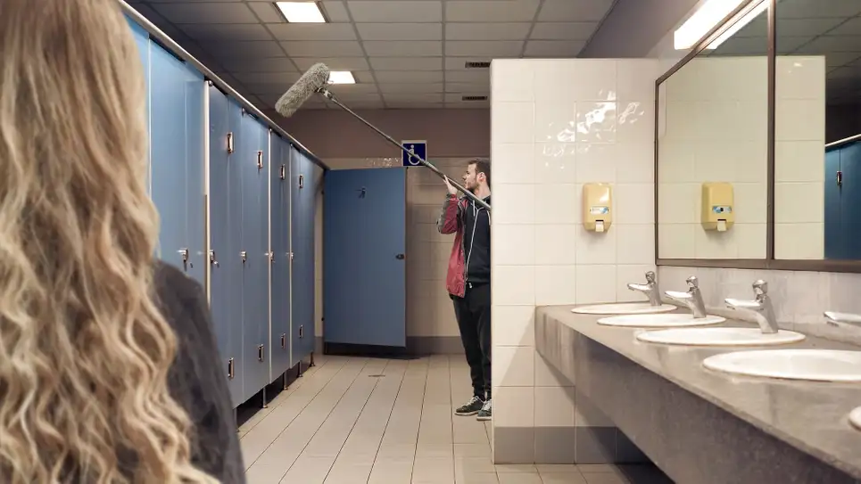

WASHINGTON—In an impassioned defense against a slew of criticism, Federal Emergency Management Agency administrator Deanne Criswell stated Thursday that spending life preparing for natural disasters was no way to live.“It’s a beautiful day—do you really expect us to spend it stockpiling water bottles and canned food?” said Criswell, who implored FEMA’s long-standing critics to stop fretting over logistics and Doppler radar screens, and start living as if today was the first today of the rest of their life.
Molestiae commodi nesciunt a, repudiandae repellendus ea.
WASHINGTON—In an impassioned defense against a slew of criticism, Federal Emergency Management Agency administrator Deanne Criswell stated Thursday that spending life preparing for natural disasters was no way to live.“It’s a beautiful day—do you really expect us to spend it stockpiling water bottles and canned food?” said Criswell, who implored FEMA’s long-standing critics to stop fretting over logistics and Doppler radar screens, and start living as if today was the first today of the rest of their life.
Molestiae commodi nesciunt a, repudiandae repellendus ea.

JJ & Auly
Activity Feed
-
 JJ Wilson Posted the question: FEMA Director Claims Spending Life Preparing For Natural Disasters No Way To Live
JJ Wilson Posted the question: FEMA Director Claims Spending Life Preparing For Natural Disasters No Way To Live
-
 Auly Dilone Posted the question: Visa Announces Cards Can Now Be Inserted, Swiped, Tapped, Bent, Clapped, Rolled, Shoved, Thrown, Dangled, Slid, Or Whacked.
Technology now allows VISA card users many more, funner, ways of paying. Which way are you excited to try?
Auly Dilone Posted the question: Visa Announces Cards Can Now Be Inserted, Swiped, Tapped, Bent, Clapped, Rolled, Shoved, Thrown, Dangled, Slid, Or Whacked.
Technology now allows VISA card users many more, funner, ways of paying. Which way are you excited to try?
-
 JJ Wilson Posted the question: Can there be Social studies without social justice?
By June 10, publishers of social studies textbooks are required to submit their materials to the Florida Department of Education for review. Textbooks that meet state requirements will be available for schools to use in K-12 social studies classes in the 2022-23 school year.
-

Police are letting us own cocaine and meth?! How will you use this opportunity.